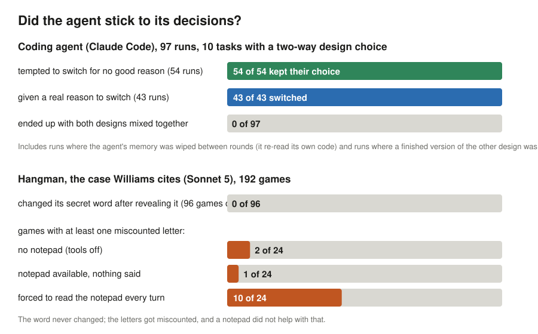

Does an AI coding agent stick to its decisions?
A small, fully inspectable experiment in response to Iwan Williams, “Intention-like representations in language models?” (Philosophical Studies, 2026).

Look at the evidence
Every run and its score
All 97 coding runs, including the superseded first dataset, with the detector's verdict after each round.
Run explorer
Any run, step by step: prompts, the agent's messages, every tool call, every file change, the tests.
Hangman games
All 192 games with full transcripts, plus the couplet trials.
How it was done
Williams's argument, the tasks, the scoring rules frozen before the first run, and every change made after.
Analysis and reviews
The full reading of the results and two rounds of adversarial review.
Limitations
What this cannot show, and why.